每天我们都会面临许许多多的选择
上周会议John带给我们许多的choices
令小编开心的是上周的TT环节全都是由我们的嘉宾完成的
那么就让小编迅速回顾下上周的会议吧~~

1.
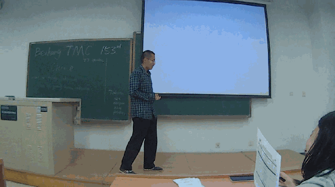
Vladmir作为第一个上台演讲的嘉宾，丝毫没有任何的紧张啊。只见他淡定的在台上发言，好似闲庭信步（不是好似，而是就是），下次还希望看到你精彩的发言！
2.
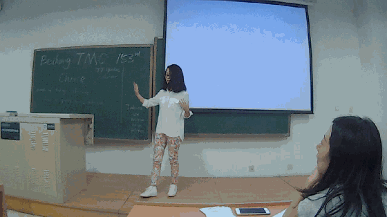
Pei作为“颜值”俱乐部的颜值担当，让人赏心悦目的不仅是颜值 ，还有她的即兴演讲
，还有她的即兴演讲 ，主持人John给出的相信很多人都会遇到的choice-你会选择嫁（娶）一个你爱的人还是爱你的人？（小编表示首先你得），而Pei的回答或许也代表里很多女生的心声吧，那就是当然要选择爱自己的人呐，所以对于广大的男性同胞们，小编奉劝一句：没错，我们也是啊，想爱他人先得好好爱自己呀~
，主持人John给出的相信很多人都会遇到的choice-你会选择嫁（娶）一个你爱的人还是爱你的人？（小编表示首先你得），而Pei的回答或许也代表里很多女生的心声吧，那就是当然要选择爱自己的人呐，所以对于广大的男性同胞们，小编奉劝一句：没错，我们也是啊，想爱他人先得好好爱自己呀~
3.
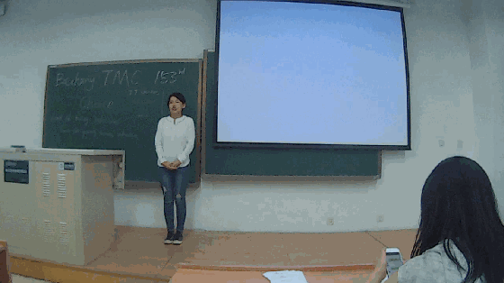
Grace的发挥也可以看得出来头马舞台就是为了向她这样的人准备的，如果家境不好在继续学习和工作之间犹豫的choice怎么办呢？Grace给出了很棒的答案！
4.
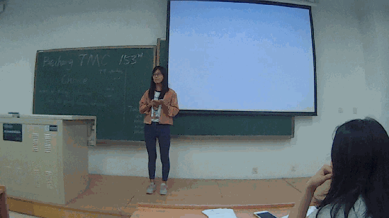
Carrie的演讲里用自己的亲身经历再次让大家对投身科研（读博）这个choice有了更深刻的认识，凡事可要三思而后行哦。
5.
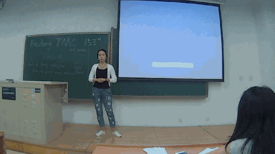
Emma的震撼全场的即兴演讲让我们都为之肃然起敬，虽然这个choice又是大家反复咀嚼过的job问题，但是Emma的表现绝对是现象级的！
6.
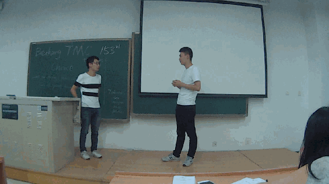
Ted和Ice的对话极富幽默让大家都仍不住哄堂大笑，也许他们作为多年好友默契至此吧，不过Ice还是需要多多向Ted学习地。
7.
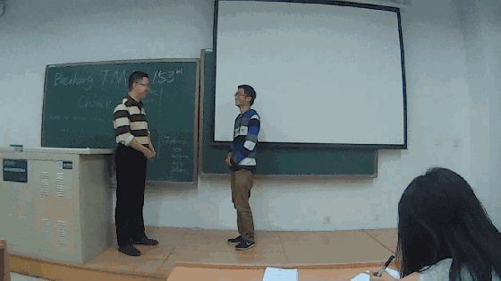
虽然最后出场，但是Jin和Andrew的表现的确是难得的啊！Andrew作为一名头马的话都绰绰有余了，Jin则显得非常的不自然。他们的对话也搞笑不断，尤其是这开场的前10秒，两人相顾无言尴尬至极的场面让大家至今回味无穷~~（PS：double对话两人是可以讨论的，以后的guest可要记住里啊）
接下来
备稿演讲的头马们
1.Huanhuan-My pets
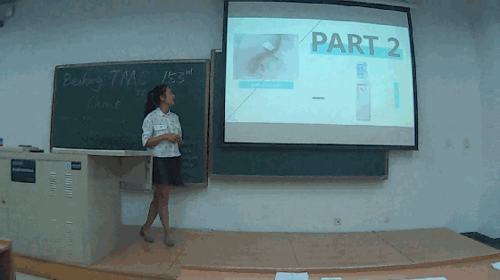
欢欢：喜欢养宠物的女孩子最美了，你看我美么？2.Jocelyn-Judge a book by Its Cover
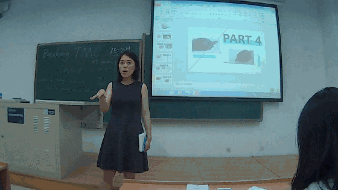
娇姐：孩子，来，摸摸头，我给你推荐本书，好么？好的。
3.Andy-To be or not to be
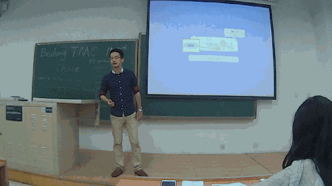
Andy:To be or。。。? 对不起，等一下

Best table topic speech-Emma（棒！）
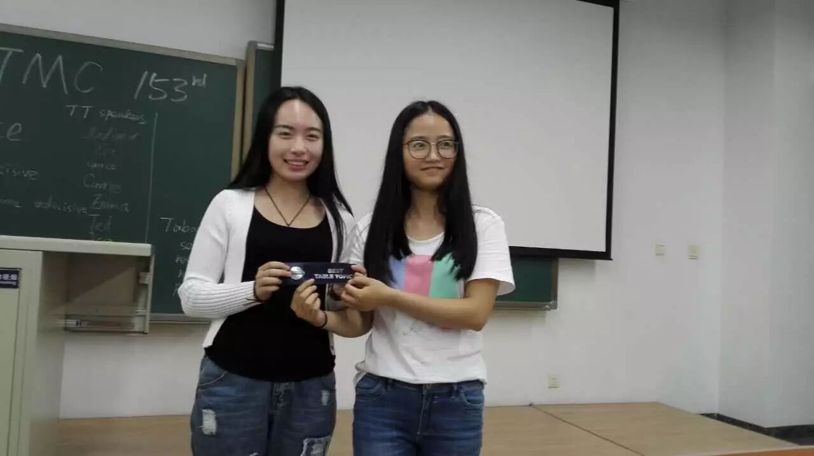
Best Prepared speech-Jocelyn（）
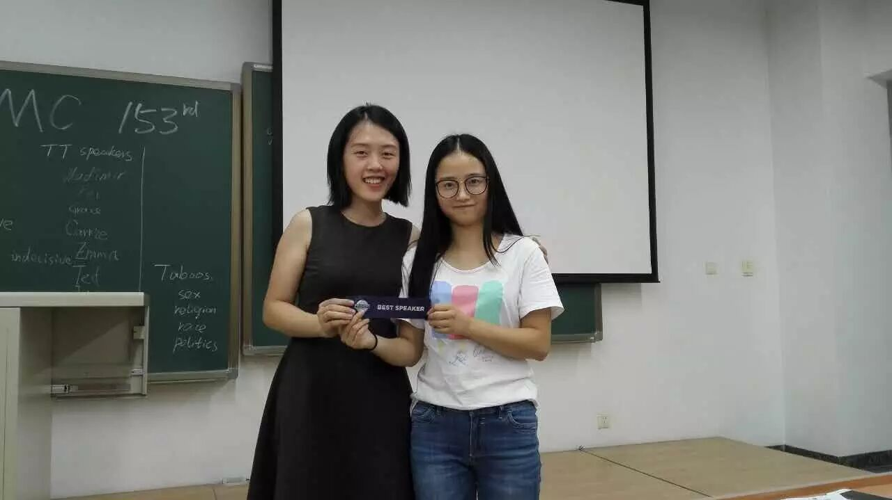
Best Evaluator-Brenda（女神的总评我只能用简直了来形容了。太赞！）
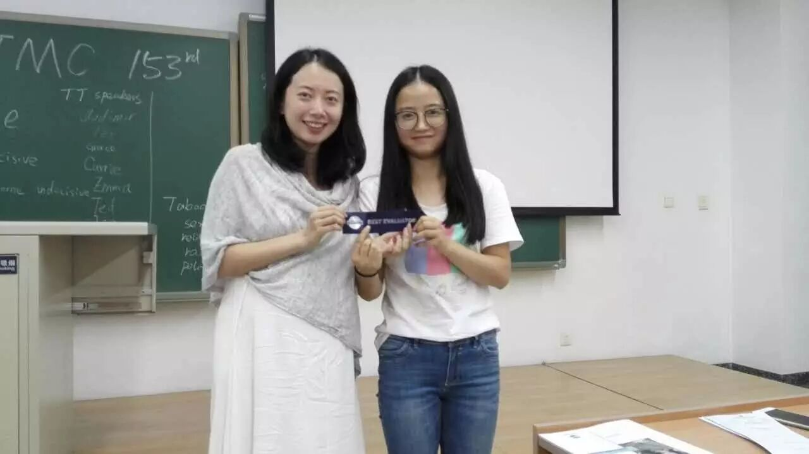
欢迎客人们哒拜访，
也希望越来越多对英语演讲感兴趣的你们
可以和我们一起分享头马舞台的美好时光。
然后感激参加（组织）会议的头马小伙伴们，
为我们带来了每一场周五的聚会~
最后，来张大合照吧~~ 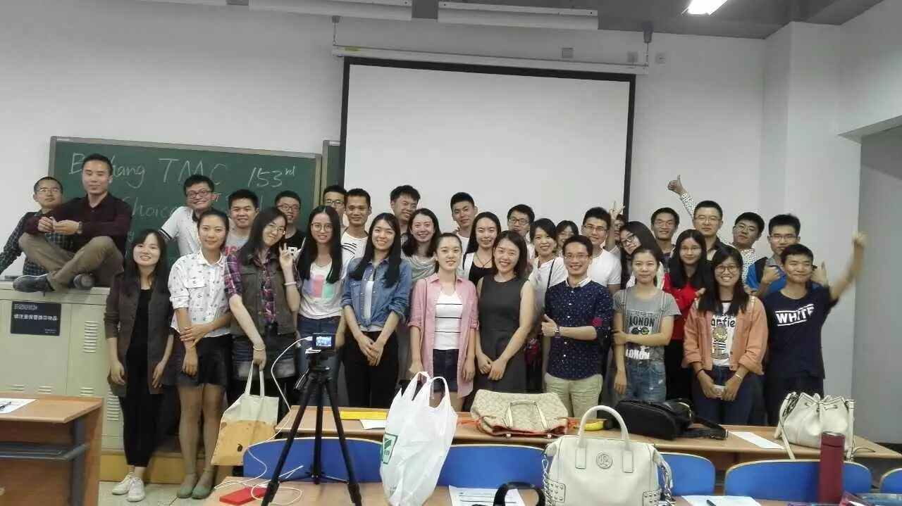
CU - this Friday~~~~
马上是国庆，小编在这里提前祝每位小伙伴国庆长假快乐~
约上你最想约的人一起出去走走吧~~
没有的话，不要紧，
我会陪伴在选择宅的你们身边~~
一起宅~~~
你以为完了？？不不不
差点忘了还有各位的精彩视频呢~
TT-Andrew&&Jin 链接：http://pan.baidu.com/s/1skJrr9z 密码：pqkp
TT-vladmir 链接：http://pan.baidu.com/s/1miJbK6G 密码：yg6y
TT-Ted&Ice 链接：http://pan.baidu.com/s/1pLs7pF1 密码：l7jz
TT-Pei 链接：http://pan.baidu.com/s/1hsjYdbI 密码：dge8
TT-Emma 链接：http://pan.baidu.com/s/1mi0eWBm 密码：71b9
TT-Grace 链接：http://pan.baidu.com/s/1hsO9AW8 密码：etah
TT-Carrie 链接：http://pan.baidu.com/s/1jHYyEFG 密码：xega
CC-Andy 链接：http://pan.baidu.com/s/1ge4cDqz 密码：qtyn
CC-Jocelyn 链接：http://pan.baidu.com/s/1gfyTl55 密码：1bsf
CC-Huan 链接：http://pan.baidu.com/s/1gfDgu7T 密码：eo6b
好累。。小编真的要去睡了，各位晚安~~~
https://mp.weixin.qq.com/s/BdcqzsOL9c86fiF96dq1qg
本页为抢救式本地归档，图文已永久保存。